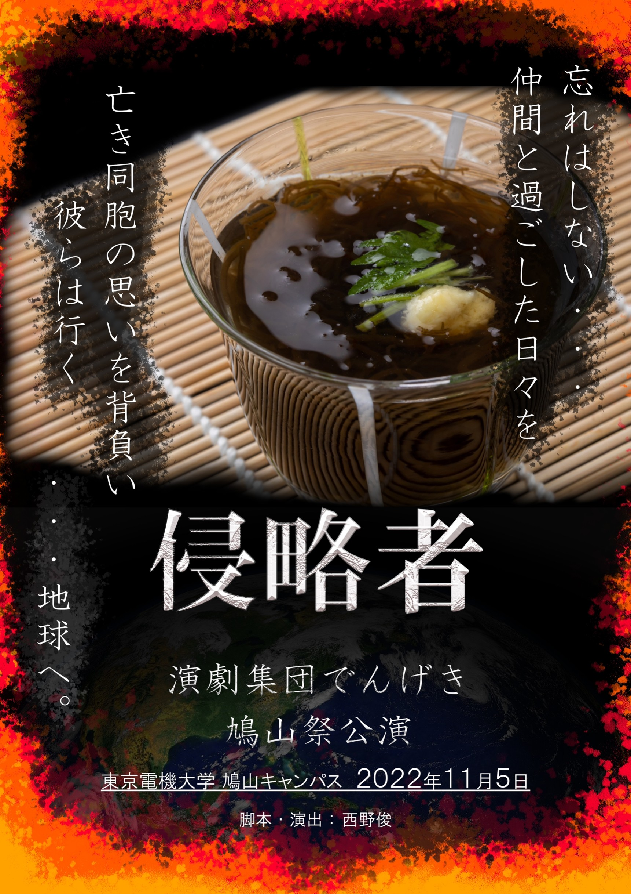
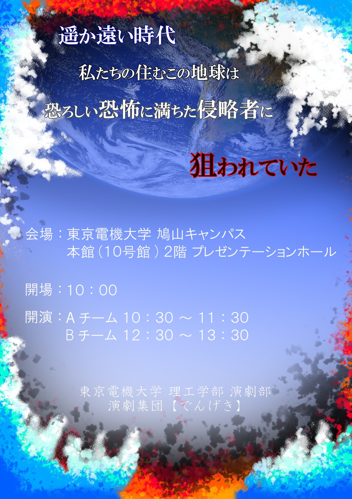

鳩山祭公演のご案内
演劇集団【でんげき】は、11/5(土)に行われる鳩山祭(1日目)にて公演を行います。
公演場所は、10号館2階のプレゼンテーションホールとなっております。
今年度の鳩山祭は、2年ぶりに一般の方もご来場いただけます。
ぜひ、足をお運びください。
演目：「侵略者」
開場：10:00
開演：Aチーム 10:30
Bチーム 12:30
公演時間は各チーム60分程度の予定です。
また、Aチーム、Bチームの公演の公演と合わせて、4年生による卒業公演も行われます。
そちらもぜひご覧ください。

